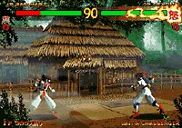

|


Review
Game Type: 3D Fighting
Vaguely like Toshinden in play style. Uses standard 2D movements
and blocking style, but adds the use of a 3D Escape button for dodges
towards or away from the screen. Some arenas have walls you can knock
your opponent against, or edges for fighters to topple off of.
Gameplay: 40/100
As far as I am concerned, this is not part of the Samurai Shodown
series. The SamSho games represent the pinnacle of gameplay, which this
game is definitely not. The pace is horribly sluggish, the moves are
awkward, and the characters are totally imbalanced. Sure, all the usual
extras are here - powerful super moves, two different sets of special
moves for each character, the ability to catch yourself if you fall
off a ledge, etc, etc. But if the basic play is total garbage, all
this effort is for nothing.
Graphics: 50/100
If you were only to look at still shots this game might show some
promise graphically. The backgrounds are colorful, the character designs
are of course extremely cool (except that the polygonal versions look
rather blocky), and the moves are of course as flashy as ever. During
fights floors sometimes collapse, dropping you into a new area. There
are even 2D cutaways for some of the more powerful attacks, showing
the attack in pencil drawings or colorful brush paintings. (The effect
is quite cool.)
If you try to impose a weak graphic engine on all this wonderful
artistic design, though, you wind up with a mess. The backgrounds have
very little detail, and wind up looking more like cardboard cutouts
than anything else. The framerate is quite poor, maybe 15-20 frames per
second by my estimation. Seams between the polygons are quite evident,
especially where vertices meet. (The characters often look as if they
have a bad case of dandruff.) SNK's graphic artists certainly tried,
but they could have done far better with a 2D game.
Sound: 80/100
Some of the new musical scores are quite impressive, mixing a
classical Japanese flavor with cool modern beats. Voice samples as usual
abound, although the quality is slightly lower than in previous games.
Overall the audio is a far more worthy effort than the graphics or
gameplay.
Overall: 40/100
There may be a better way to play this game than pure button-mashing,
but in playing for two hours I didn't find it. It was random guesswork
as to whether a given special move would be effective at any given time,
and eventually I just chose one or two of my best moves for each character
and started repeating them, to great effect.
Of course, even if the gameplay were decent SS64 could never stand up
to comparison with the graphics of Virtua Fighter 3 or even Tekken 3 and
Soul Edge. (Which run on Playstation hardware, for Pete's sake!) I find it
unbelievable that SNK was willing to release this game into arcades in its
current form.
Of course, the first effort on any new hardware isn't going to take
advantage of all its capabilities. I'm sure the new architecture is
(partly) to blame for SS64's sorry state. So Neophytes shouldn't give up
on the Neo Geo 64 just yet, especially since I hear it has some nice 2D
capabilities. I sincerely hope SNK will use these for their next Samurai
Shodown game.
|